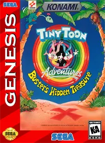

💡 Para jogar em tela cheia, clique no ícone de configurações "↓" no centro do emulador e então "Enter Full Screen"

Tiny Toon Adventures: Buster's Hidden Treasure é um jogo de plataforma desenvolvido pela Konami e lançado para o Sega Genesis em 1993. O jogo acompanha Buster Bunny, o coelho azul protagonista da série animada Tiny Toon Adventures, em uma aventura para recuperar um tesouro escondido roubado pelo vilão Montana Max.
A história começa quando Montana Max, sempre obcecado por dinheiro e poder, descobre a existência de um tesouro lendário e contrata o cientista maluco Dr. Gene Splicer para ajudá-lo. Dr. Splicer usa uma máquina de controle mental para hipnotizar os amigos de Buster — incluindo Plucky Duck, Hamton J. Pig e Dizzy Devil — transformando-os em inimigos. Cabe a Buster atravessar florestas, cavernas, castelos e outras fases para libertar seus amigos e impedir Montana Max de ficar com o tesouro.
O gameplay é um side-scrolling clássico com fases bem elaboradas, chefes memoráveis e uma jogabilidade fluida típica dos grandes títulos da Konami para o Mega Drive / Genesis. O visual colorido e fiel ao desenho animado, aliado à trilha sonora animada, tornam este jogo um dos melhores de plataforma da geração 16-bit.
Para salvar seu progresso neste jogo, você pode salvar o arquivo .save usando as opções do emulador que está utilizando. Isso pode ser feito através do ícone 💾 no menu no canto inferior esquerdo da tela. Isso criará um arquivo de salvamento que você poderá carregar 📂 posteriormente para continuar de onde parou.
Wiki Oficial